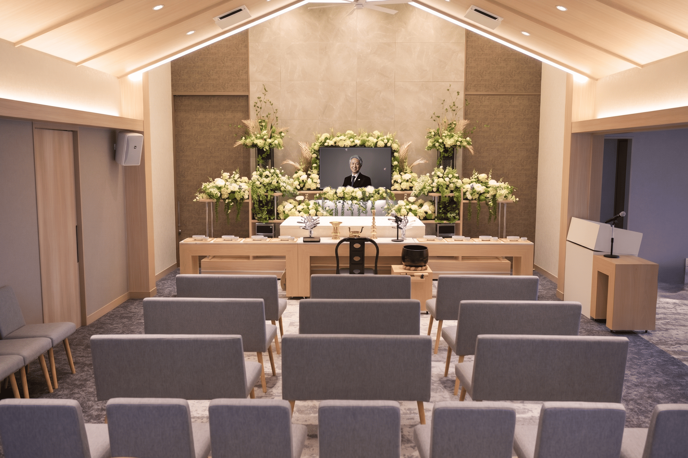
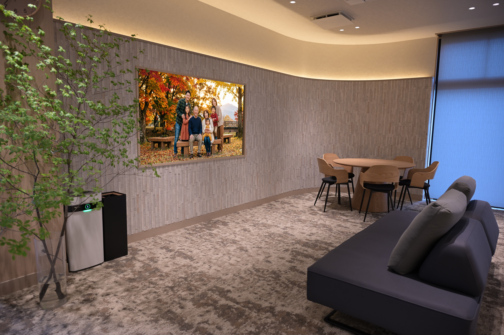
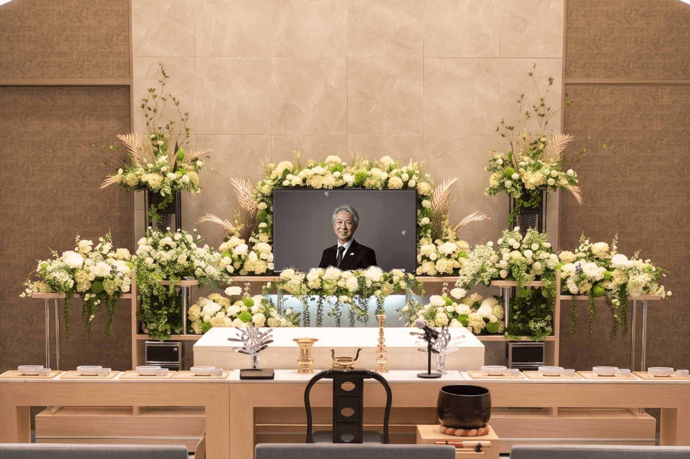
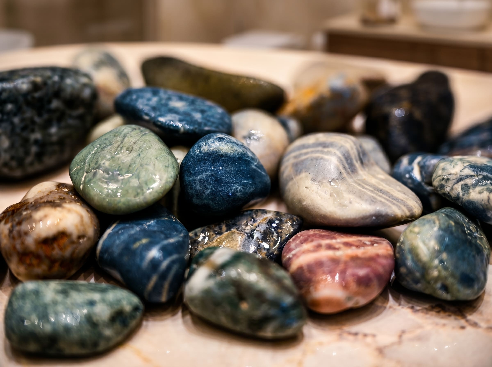
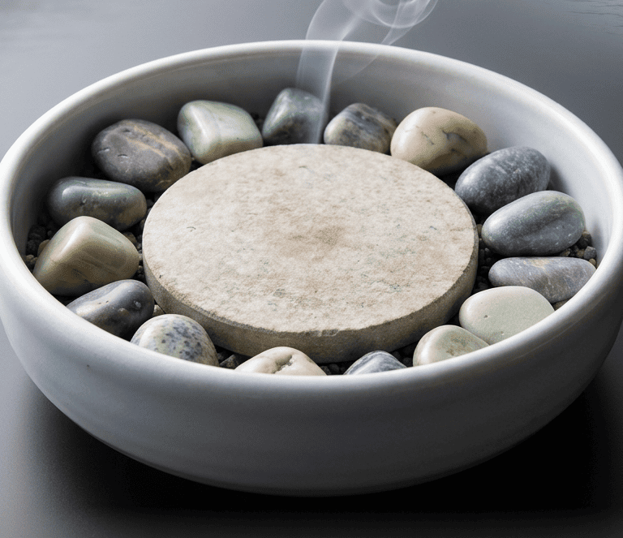

01
想いが真っ直ぐに伝わる
温かみのある洋風祭壇
木目調をベースに白と緑を基調としたお花で
自然な温かみを表現。
故人様と「真っすぐ向かい合う」空間で、
葬送のひとときをお過ごしいただけます。
あたたかな思い出とともに、
尊い人生への敬意を込めたご供養を。

ひすい野ヴィラのお別れ空間は、
形式や宗教にとらわれることなく
「みなさまらしいお別れ」を
自由に表現できる場所です。
一体感を大切にした空間設計は、
みなさまの「あたたかい思い出」を
故人様のもとへと集めてくれます。



木目調をベースに白と緑を基調としたお花で
自然な温かみを表現。
故人様と「真っすぐ向かい合う」空間で、
葬送のひとときをお過ごしいただけます。

香炉は赤川焼「やまなみホワイト」
朝日・入善・黒部の各地から集められた
天然石をあしらっています。
100人100通りの輝きを持つ人生を天然石に見立てた、
ひすい野ヴィラならではのしつらえです。
趣味のお品物やご家族からのお手紙などを
館内中自由にお飾りすることが可能。
「その人らしい」感謝の空間づくりを
スタッフがお手伝いさせていただきます。
朝日・入善・黒部の山川海から
丁寧に拾い集められた天然石は、
朝日町を代表する宝石の
「翡翠（ひすい）」と同じ工程で
14日余りかけて磨き上げました。
地域を支えた故人さまへの感謝を
どのように形にするのか。
そのひとつの答えが、
香炉石に込められています。
100個あれば100通りの輝き。
それはそのまま、
世界でたった一人の大切な方が
「歩んでこられた人生」を表しています。
あなたの想いと共に
全力で伴走いたします。
従来の形式とは違う空間に、
戸惑われることと思います。
しかし、ご安心ください。
世界にたった一人だけの
大切な方にぴったりな
葬送のひとときを
ご提供できますよう、
お手伝いいたします。
ほんの少しでも不安なこと、
わからないことはいつでも、
私たち高松葬祭にご相談ください。